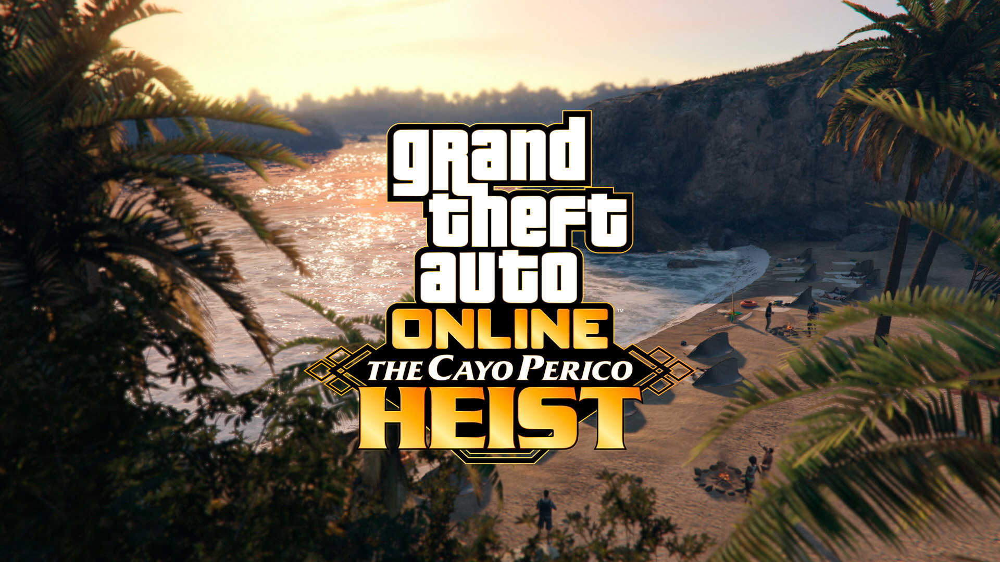
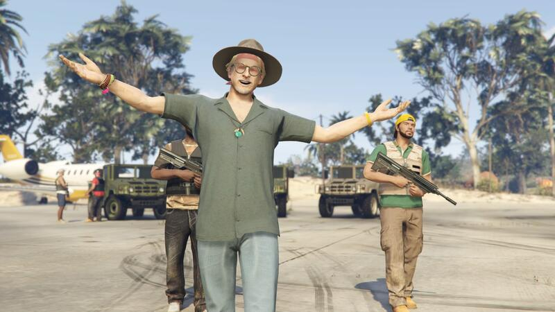
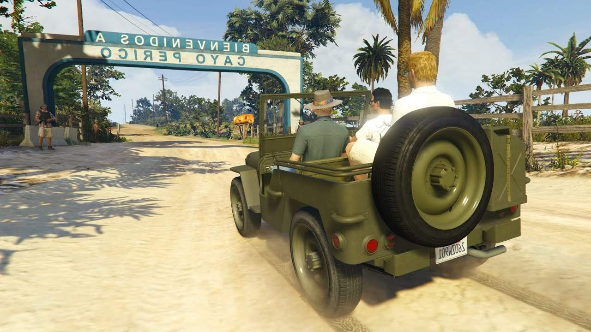

Новое обновление для GTA 5 - "The Cayo Perico Heist"

Rockstar Games выпустила обновление The Cayo Perico Heist для GTA Online. Главной особенностью апдейта стал остров Кайо-Перико, на который вы отправитесь, чтобы провернуть дерзкое ограбление. Но за возможность устроить налёт придётся выложить кругленькую сумму в GTA-долларах.
Задание выдаёт Мигель Мадрасо — сын криминального авторитета Мартина и его жены Патриции, которых вы можете помнить по сюжетной кампании GTAV. Семейство Мадрасо что-то не поделило с наркоторговцем Эль Рубио, и теперь Мигель ищет желающих обчистить тщательно охраняемый остров, где обосновался злодей.
Вы отправитесь на Кайо-Перико на борту частного самолёта (очевидцы передают, что исследовать остров в свободном режиме нельзя). Оказавшись на месте, первым делом нужно разведать обстановку — найти скрытые входы, точки эвакуации и прочие уязвимости в системе безопасности.
За сбором информации следует финальный этап подготовки. По словам разработчиков,у этого дела нет заранее прописанного маршрута прохождения. Вы выбираете, как проникнуть на остров и удрать с него, чем вооружиться и в какое время суток начать ограбление. На локации есть дополнительные источники добычи — тайники с наличкой и контрабандой.
Эль Рубио можно обчистить одному или с друзьями — поддерживается отряд из 2—4 участников. С пустыми карманами налёт не организовать: для планирования операции нужна ещё одна новинка апдейта — подлодка «Косатка». Базовая версия транспорта влетит вам в 2.2 миллиона долларов GTA — это без необязательных удобств, вроде оружейной мастерской и пространства для хранения техники.